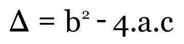
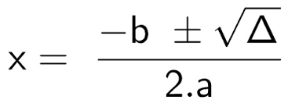

EQUAÇÃO QUADRÁTICA
Uma equação quadrática ou equação do segundo grau é uma equação caracterizada por um polinômio de grau 2, ou seja, um polinômio do tipo ax2+bx+c=0, em que os coeficientes a, b e c são números reais, com a ≠ 0.
Assim, o único coeficiente que necessariamente não pode ser zero é o coeficiente a. Quando um dos outros dois coeficientes é igual a zero, dizemos que a equação do segundo grau é incompleta.
EQUAÇÃO DE SEGUNDO GRAU INCOMPLETA
As equações do segundo grau incompletas são aquelas que podem ser escritas na forma ax2 + bx + c = 0, em que b ou c, ou ambos os coeficientes sejam iguais a zero. Exemplos:
- Equações que possuem ax2+c=0, ou seja b=0;
- Equações que possuem ax2+bx = 0, ou seja, c = 0;
- Equações que possuem ax2=0, ou seja, b=0 e c=0.
Para solucionar uma equação do 2º grau, é muito comum a utilização da fórmula de Bhaskara, porém existem métodos específicos quando falamos de equações incompletas.
Quando C é igual a zero;
Para encontrar seu conjunto de soluções, colocamos a variável x em evidência, reescrevendo essa equação como uma equação produto. Por exemplo, na equação 2x2+ 5x = 0.
1° passo: Colocar x em evidência
Colocando x em evidência, temos que:
2x2+5x=0
x·(2x + 5)=0
2° passo: Separar a equação produto em dois casos
Para que a multiplicação entre dois números seja igual a zero, um deles tem que ser igual a zero.
x·(2x + 5)=0
2x+5=0
3° passo: Encontrar as soluções
Agora temos que encontrar o valor de x que faz com que 2x + 5 seja igual a zero, então;
2x+5=0
2x=-5
x= -5/2
Então encontramos solução da equação, x = -5/2.
Observe que, ao trocarmos o número de lugar seu sinal inverte, se o número era positivo, passará a ser negativo e se fosse negativo passaria a ser positivo. (O x deve estar sempre à esquerda.)
Quando B é igual a zero;
Quando B = 0, temos o tipo de equação incompleta ax2+c=0. Para resolvermos, temos que isolar a variavel x para encontrarmos a solução da nossa equação. Por exemplo 3x2- 12 = 0
1° passo: Isolar a variável x
3x2- 12 = 0
3x2=12
2° passo: Dividir os valores
x2= 12:3
x 2= 4
Ao extrair a raiz no segundo membro, é importante lembrarmos que existem sempre dois números e que, ao elevarmos ao quadrado, encontramos como solução o número 4 e, por isso, colocamos o símbolo de ±.
3° passo: Encontrar as soluções
x= ±√4
x=±2
Nossas possiveís soluções são x=2, x=-2.
Quando B e C são iguais a zero;
Quando ambos, B e C são iguais a zero temos uma equação do tipo ax2=0 e que terá sempre a solução x=0. Exemplo:
3x2=0
x2=0:3
x2=0
x=±√0
x= ±√0
x=0
EQUAÇÃO DE SEGUNDO GRAU COMPLETA
As equações do 2º grau completas são aquelas em que todos os coeficientes são diferentes de zero, ou seja a, b, c ≠ 0. Como na equação 3x2+4x+1=0, onde todos os coeficientes são diferentes de zero.(a=3, b=4 e c=1).
Como podemos resolver?
Vamos usar de exemplo a equação 2x2+8x–24=0.
1° passo: Temos que identificar os coeficientes a, b e c. (o coeficiente a é o número que está junto ao x2, o b é o número que acompanha o x e o c é o termo independente, ou seja, o número que aparece sem o x).
2x2+8x–24=0
a=2, b=8, c=-24
2° passo Calcular o valor de delta
Para calcular as raízes é necessário conhecer o valor do delta. Para isso, substituímos as letras na fórmula pelos valores dos coeficientes.

Podemos a partir do valor do delta, saber previamente o número de raízes que terá a equação do 2º grau. Ou seja, se o valor de delta for maior que zero (Δ > 0), a equação terá duas raízes reais e distintas.
Se ao contrário, delta for menor que zero (Δ < 0), a equação não apresentará raízes reais. E se for igual a zero (Δ = 0), a equação apresentará somente uma raiz.
Δ= b2–4.a.c
Δ= 82-4.2.(-24)
Δ= 64+192
Δ= 256
3° passo: Calcular as raízes
Para calcularmos as raízes usamos a fórmula de Bhaskara.

Observe que nessa expressão aparece o sinal ±. Isso indica que x possui dois valores: o primeiro para a raiz de delta negativa e o segundo para a raiz de delta positiva.
Agora, observe a conclusão do terceiro passo:
x = – 8 ± √256
2·2
x = – 8 ± 16
4
Para a raiz negativa teremos;
x'= – 8 – 16 = –24 = –6
4 4
Para a raiz positiva teremos;
x'' = – 8 + 16 = 8 = 2
4 4
Agora solucionar equações de segundo grau não parece ser mais um bicho de sete cabeças, não é?
BIBLIOGRAFIA
Mais informações sobre equações quadráticas ↓↓↓
aqui!
aqui!
aqui!
aqui!